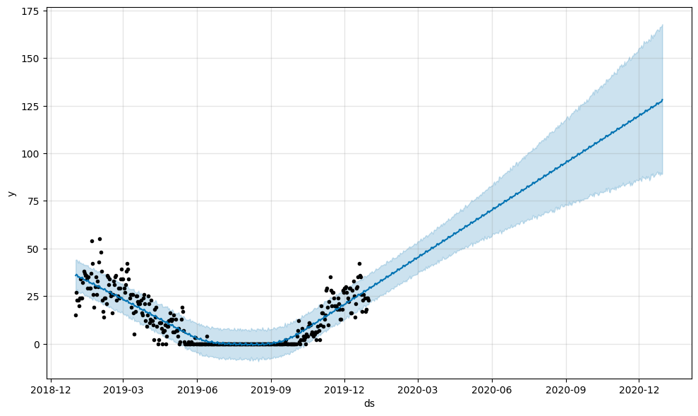
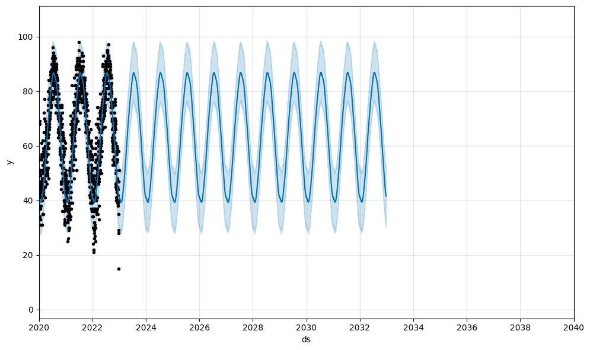
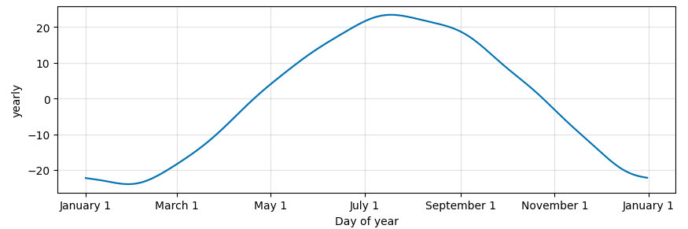

This project focuses on forecasting weather conditions using Facebook Prophet. The primary objective is to predict future weather patterns based on historical weather data, emphasizing optimizing forecast accuracy and computational efficiency for large datasets.
Facebook Prophet is a powerful forecasting tool developed by Facebook's Core Data Science team. It is designed for making accurate forecasts with time series data by accommodating seasonal variations, holidays, and other predictable changes. In this project, we leverage the capabilities of Facebook Prophet to analyze and predict weather patterns in New York City and São Paulo. By utilizing historical weather data, the tool enables us to make informed predictions about future weather conditions.
We begin testing the model with a smaller dataset containing weather data from NY throughout 2019. Importing Prophert and making a forecast of one year for the average temperature shows considerable limitations, this indicates that the dataset is too small to serve as adquate input for predictions.
A larger dataset can be found in kaggle with weather data collected in the Central Park since 1869. Performing the same analysis as before we find a much better fitting that captures the seasonality of the data. Yearly trends are also evident, with an expected temperature peak during summer.
We may evaluate the model's performance with Prophet's diagnostics tool. The performance metrics contain information about the forecast accuracy, including the Mean Squared Error (MSE), Root Mean Squared Error (RMSE), Mean Absolute Error (MAE), Mean Absolute Percentage Error (MAPE), Median Absolute Deviation (MDAPE), and Symmetric Mean Absolute Percentage Error (SMAPE). These metrics help in understanding the model's prediction capabilities over different forecast horizons. We find, for instance, that our forecasts display a coverage of around 70%, which suggests that the actual values fall within the predictive intervals provided by the model in about 70% of cases. This coverage metric provides insight into the uncertainty of the model's predictions and helps us gauge the reliability of the forecasts.
{kind=link}